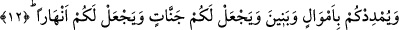

NE ZAMAN DÂVET ETTİYSEM
AYAK DİREDİLER
5. (Sonra Nûh:) Rabbim! dedi, doğrusu ben kavmimi gece gündüz (îmâna) dâvet
ettim;
6. Fakat benim dâvetim, ancak kaçmalarını arttırdı.
7. Gerçekten de, (îmâna gelmeleri ve böylece) günahlarını bağışlaman için onları
ne zaman dâvet ettiysem, parmaklarını kulaklarına tıkadılar, (beni görmemek için)
elbiselerine büründüler, ayak dirediler, kibirlendikçe kibirlendiler.
8. Sonra, ben kendilerine haykırarak dâvette bulundum.
9. Sonra, onlarla hem açıktan açığa hem de gizli gizli konuştum.
10. Dedim ki: Rabbinizden mağfiret dileyin; çünkü O çok bağışlayıcıdır.
11. (Mağfiret dileyin ki,) üzerinize gökten bol bol yağmur göndersin,
12. Mallarınızı ve oğullarınızı çoğaltsın, size bahçeler ihsan etsin, sizin için
ırmaklar akıtsın.
13. Size ne oluyor ki, Allah’a büyüklüğü yakıştıramıyorsunuz?
14. Hâlbuki, sizi türlü merhalelerden geçirerek O yaratmıştır.
Nûh (a.s.), kavmini dâvette olanca gayretini sarfettikten, onları uyarma uğrunda
gerekeni tam olarak yaptıktan, bütün çâre ve yolları tükettikten sonra Rabbine seslendi.
Hâlbuki Rabbi, bu uzun müddet içinde kavmi ile arasında cereyan eden konuşmaları çok
iyi biliyordu. İşte Nûh (a.s.) Rabbine seslenerek: “Ey benim Rabbim! dedi, doğrusu
ben kavmimi gece-gündüz” îmâna ve itâata “dâvet ettim.” Yâni ben onları hiç
gevşeklik göstermeden, vazîfemi hafife almaksızın îmâna ve itâata çağırdım. “Gece
gündüz” kelimeleri, “dâvet ettim” fiilinin zarflarıdır, yâni dâvetin ne zaman olduğunu
haber verirler. Bu iki kelime ile dâvetin devamlılığı ifâde edilmiş olmaktadır. Zîrâ